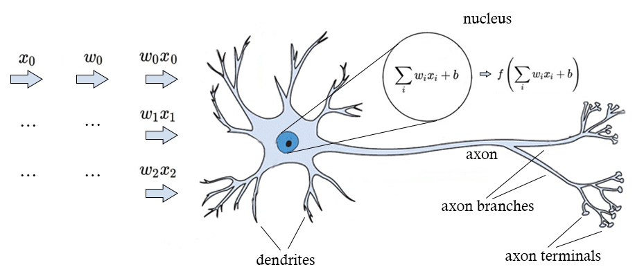

An Introduction to Artificial Neural Networks
Artificial neurons mimic the basic function of biological neurons, and much like their biological counterparts they only become useful when connected in a larger network, called Artificial Neural Networks. Neural networks may mimic the basic building block of the human brain, however, when connected to a larger network artificial neurons do not inherit their biological counterparts ability of what is termed “general intelligence”. Even the largest collection of artificial neurons are not intelligent. Artificial Neural Networks are only capable of performing specific tasks.
neural networks can achieve above 80% accuracy in certain tasks
Neural networks are extremely adept at recognising patterns, this is pattern recognition is the reason they have become so widely used and talked about in recent years. The ability of neural networks to discover and recognise patterns allows them to far surpass traditional methods in computer science, making them viable for use in research and business.
This pattern recognition ability can be used to solve a wide variety of problems. One of the projects in the latter half of this book uses sentiment analysis, a natural language processing categorisation problem. Is a string of text positive, neutral or negative? This question may seem simple at first, however, the algorithm will have to traverse the nuances in human speech; sarcasm and other complex linguistic nuances can blur the question for machines. Despite this, neural networks can achieve greater than 70% accuracy, and the most advanced neural networks can achieve above 80% in sentiment analysis and opinion mining tasks. This is more than enough to provide advantages over using humans to categorise sentiment.
An Artificial Neuron
The image below shows an illustration of a single biological neuron annotated to describe a single artificial neurons function.

A biological neuron receives input signals from its dendrites from other neurons and sends output signals along its axon, which branches out and connects to other neurons. In the illustration above, the input signal is represented by x0, as this signal ‘travels’ it is multiplied (w0 x0) based on the weight variable (w0). The weight variables are learnable and the weights strength and polarity (positive or negative) control the influence of the signal. The influence is determined by summing the signal input and weight (∑i wi xi + b) which is then calculated by the activation function f, if it is above a certain threshold the neuron fires. Below is a simplified diagram.
Sigma
The Greek letter sigma ∑ is used to represent summation, this can be thought of as analogous to a for loop in programming.
Types of Artificial Neuron
We’ve hinted at the existence of different types of neurons which serve different purposes. In this section we will discuss the different types of neuron which will make up a neural network. Networks don’t have to have every type of neuron, and some neurons can have multiple purposes.
Neuron naming conventions differ between sources, industries, and people of different backgrounds. Neurons might also be known as units or nodes. They’re simply different names for the same thing.
Input and Output Neurons
Input and output neurons can be thought of as placeholders which represent information passed into the network and information processed out from the network in the form of vectors or arrays. These vectors typically contain floating point numbers. The number of elements within the vector is equal to the number of input neurons.
Hidden Neurons
Hidden neurons sit in the middle of a network, surrounded by other neurons – they receive input from input neurons or other hidden neurons, and they output to output neurons or hidden neurons. They are never connected to the data or produce output themselves. This is their defining characteristic.
Bias Neurons
The addition of bias into a network helps the network learn by allowing the programmer to shift the activation function curve to the left or right, the fine tuning of this parameter can affect the success of learning. Below is an example of a network including bias neurons.
The diagram shows a neural network designed to compute XOR arguments. Each layer, excluding the input layer, has a bias neuron attached. Later on in this chapter we will build and calculate the output of this network, and build an example in scikit-learn.

An example of how a programmer can shift the activation function laterally:
Context Neurons
Context neurons exist in some specific types of neural networks and are not present in all network types. For example, Recurrent neural networks use context neurons as a form of memory to hold on to information from past calculations. They attempt to mimic context created by biological phenomena within human brains. An analogy helps make their purpose clearer; if you’re crossing the street and you hear a car horn you will likely stop and look towards the noise, looking for danger. However, if you were at a sports event and hear a horn from an over enthusiastic supporter you ignore it. You’ve learned loud noises are important when crossing the street, but are meaningless within other contexts.
Below is an example of a recurrent neural network architecture:
The network resembles a typical network, with input I1, two hidden neurons and output O1. Additionally, information is duplicated and sent to C1 and C2 which provide data from previous calculations.
Weight
Weight variables allow the network or programmer to adjust the program to closer match the desired output. Weights are programmatically manipulated by the network during training iterations to bring the error rate down as the network learns. As seen in the section discussing bias, bias allows the manipulation of the activation function left or right on a graph. Weight allows the gradient of the activation function to be manipulated.
Activation Functions in Brief
The frequency of the firing of an artificial neuron is determined by an activation function. It determines at what threshold the neuron will fire. This section describes the Sigmoid activation function to bring clarity to the operation of an artificial neuron. Activation functions will be discussed in detail further on in this section.

The graph above shows the Sigmoid activation function, which will convert all input signals into positive values between 0 and 1. The use of other activation functions with wider values, or negative values change the frequency of the firing of a neuron and will suit different types of data and purposes.
Practical Exercise
The Perceptron
The foundation of modern neural networks was created in 1956 by Frank Rosenblatt and sort to mimic the architecture of a basic biological neuron, it was called a perceptron. This architecture can be seen in the illustration at the beginning of this chapter.
Classifying flowers Scikit-learn includes the Iris flower dataset which is often used for algorithm testing purposes, and it has become somewhat of a “hello world” dataset of neural networks. The aim of our single layer model is to classify flowers from the Iris dataset into different categories.
Installing Scikit-learn via Anaconda I recommend installing Anaconda, a scientific python library which includes scikit-learn, all of its dependencies, matlibplot and more. We’ll be using jupyter notebook, formally IPython Notebook, bundled with Anaconda to run our code.
https://www.anaconda.com/download
If you’re having trouble please refer to the scikit-learn or anaconda documentation. Or if conflicts are possible with your existing installations, consider using a virtual machine and start from a clean slate.
Jupyter Notebook
Launch jupyter notebook via the Anaconda Navigator application, which was installed with Anaconda.
Create a new Python notebook in the jupyter web interface which has launched.
Now we can write python and run it live in the web interface.
Importing Dependencies
from sklearn import datasets
from sklearn.preprocessing import StandardScaler
from sklearn.linear_model import Perceptron
from sklearn.model_selection import train_test_split
from sklearn.metrics import accuracy_score
from matplotlib.pyplot as plt
The Iris Data Set
The Iris dataset consists of 150 samples of four features per sample, measuring the length and width of sepals and petals (in cm), with 50 samples for three species of Iris (Iris setosa, Iris virginica, and Iris versicolor). First featured in British statistician and biologist Ronald Fisher’s research article in 1936 the data set has become a popular test of predictive algorithms, including neural networks.
The Iris dataset is small in comparison to the data sets which are needed for more complex algorithms, for example, in deep learning convolutional neural networks require tens of thousands of data points to learn effectively.
Itallics indicate comments or text output by the console.
#Load the Iris dataset
iris = datasets.load_iris()
#Assign the data to vertices
x = iris.data
y = iris.target
Let’s take a look at the data we’re going to manipulate.
x indicies:
#Print the first five features (the four measurements in a 2D array)
x[:5]
Output:
array([[5.1, 3.5, 1.4, 0.2],
[4.9, 3. , 1.4, 0.2],
[4.7, 3.2, 1.3, 0.2],
[4.6, 3.1, 1.5, 0.2],
[5. , 3.6, 1.4, 0.2]])
y indicies:
#Print all 150 indices of x axis (the class of each sample)
y[:150]
Output:
array([0, 0, 0, 0, 0, 0, 0, 0, 0, 0, 0, 0, 0, 0, 0, 0, 0, 0, 0, 0, 0, 0,
0, 0, 0, 0, 0, 0, 0, 0, 0, 0, 0, 0, 0, 0, 0, 0, 0, 0, 0, 0, 0, 0,
0, 0, 0, 0, 0, 0, 1, 1, 1, 1, 1, 1, 1, 1, 1, 1, 1, 1, 1, 1, 1, 1,
1, 1, 1, 1, 1, 1, 1, 1, 1, 1, 1, 1, 1, 1, 1, 1, 1, 1, 1, 1, 1, 1,
1, 1, 1, 1, 1, 1, 1, 1, 1, 1, 1, 1, 2, 2, 2, 2, 2, 2, 2, 2, 2, 2,
2, 2, 2, 2, 2, 2, 2, 2, 2, 2, 2, 2, 2, 2, 2, 2, 2, 2, 2, 2, 2, 2,
2, 2, 2, 2, 2, 2, 2, 2, 2, 2, 2, 2, 2, 2, 2, 2, 2, 2])
Neural Networks require the data to be represented as floating point numbers. This allows the decimal points high accuracy to be used by the various calculations within the underlying implementation. Floating point numbers can simply represent data with finer granularity than the ten representations that integers allow. This can be appreciated by looking at the annotated neuron illustration at the start of this section.
The 2D array held in x represents four columns: Sepal Length, Sepal Width, Petal Length and Petal Width.
Visualising the Data Set
Now let’s visualise the data set to get a better idea of what the dataset actually describes.
#Import dataset
iris = datasets.load_iris()
X = iris.data
y = iris.target
plt.figure(2, figsize=(8, 6))
plt.clf()
#Plot graph
plt.scatter(X[:, 0], X[:, 1], c=y, cmap=plt.cm.Set1, edgecolor='k')
plt.xlabel('Sepal length')
plt.ylabel('Sepal width')
plt.xticks(())
plt.yticks(())
plt.show()
This graph shows the distribution of the three sample types, categorized by two of the features, sepal width and sepal length. Feel free to change the code and visualise the data in different ways.
Preparing the Data
We need to set aside some of the data set to become the data the perceptron is trained on. This data isn’t used again once the training is complete – the algorithm has already seen and learned from this information, and would serve no purpose to be classified – as the answer is already known.
#Set aside 30% of the data set for training
x_train, x_test, y_train, y_test = train_test_split(x, y, test_size=0.3)
The StandardScaler() function standardised all of the features in a dataset to have a mean of zero and unit variance, to ensure all of the features are distributed normally. Many predictive algorithms require the data set to be standardised otherwise their behavior will be unpredictable.
#Train the scaler, which standarises all the features to have mean of zero and unit variance
sc = StandardScaler()
sc.fit(x_train)
Now we apply the scaler to each section of the split data set.
#Apply the scaler to the X training data
x_train_std = sc.transform(x_train)
#Apply the SAME scaler to the X test data
x_test_std = sc.transform(x_test)
Scikit-Learn Perceptron
Here we use the Perceptron() function to invoke a perceptron object with the following parameters:
max_iter is set to a maximum of 50 iterations over the data set, iterations are also referred to as epochs. Remember this word for if you plan to read further texts, it can be confusing having words used interchangeably.
eta0 is a constant value by which updates are multiplied. This will ensure the values change and don’t stagnate, it can be thought of as the bias.
verbose is a boolean flag, when set to 1 it will print information for each epoch.
#Create a perceptron object with 50 iterations over the data set, and a learning rate of 0.3
ppn = Perceptron(max_iter=50, eta0=1, verbose=0)
#Train the perceptron
ppn.fit(x_train_std, y_train)
Perceptron(alpha=0.0001, class_weight=None, eta0=1, fit_intercept=True,
max_iter=50, n_iter=None, n_jobs=1, penalty=None, random_state=0,
shuffle=True, tol=None, verbose=0, warm_start=False)
#Apply the trained perceptron on the X data to make predicts for the y test data
y_pred = ppn.predict(x_test_std)
The Results
#Print the predicted y test data
y_pred
array([1, 2, 2, 1, 1, 0, 2, 2, 1, 2, 2, 0, 2, 1, 1, 2, 1, 0, 0, 1, 2, 1,
2, 2, 1, 1, 0, 2, 2, 2, 0, 1, 1, 0, 0, 1, 1, 1, 2, 2, 0, 1, 1, 1,
1])
#Print the true y test data
y_test
array([1, 2, 2, 1, 1, 0, 2, 1, 1, 2, 2, 0, 2, 1, 1, 2, 1, 0, 0, 1, 2, 0,
2, 2, 0, 1, 0, 2, 2, 2, 0, 1, 1, 0, 0, 1, 0, 1, 2, 2, 0, 1, 0, 1,
1])
#Print the accuracy of the implementation
print('Accuracy: %.2f' % accuracy_score(y_test, y_pred))
Accuracy: 0.89
This implementation of the most simple neural network achieves high accuracy. Throughout multiple runs it achieved between 0.89 and 1.00 accuracy, or said another way it’s 89% to 100% accurate.
This was achieved following the recommended parameter settings found in the scikit-learn documentation. However, trial and error manipulation of the parameters can be an important method in machine learning, so don’t be afraid to experiment. Always consider how the parameters are being used internally, how they affect the data and experiment to see how changing them actually affects the result.
Try changing the parameters for yourself to see how that affects the accuracy. See the scikit-learn perceptron documentation to see other parameters which you can manipulate. Hyperparameter manipulation is an important part of tuning and getting the best out of neural network implementations, as you read through the chapters of this book you will learn more about different parameters and continue to try your hand at practical exercises. Tuning is also discussed in detail in the Tuning and Evaluating Neural Networks chapter.
Under the Hood: The Scikit-Learn Perceptron
Programming libraries are created to make the programmers life as easy as possible by providing commonly needed applications written by others. With this as their main aim libraries may not implement algorithms straight from textbooks. Additionally, as libraries are created with modularity in mind, their underlying implementation will likely be more complex than expected.
Scikit-learn’s perceptron is no different. The Perceptron() function shares the underlying implementation of the SGDClassifier() function, and its functionality differs from traditional simple perceptrons as a result. For example, traditionally perceptrons required data to be linearly separable, that is to be able to be separated cleanly without overlap – imagine a graph with a single line separating two distinct groups of data points on each side.
SGDClassifier() implements regularized linear models utilizing the stochastic gradient descent (SGD) learning algorithm. SGDClassifier(loss=“perceptron”, eta0=1, learning_rate=“constant”, penalty=None) is equivalent to Perceptron().
Jargon Buster
That last bit became a little complicated, so lets break it down. “SGDClassifier() implements regularized linear models utilizing the stochastic gradient descent (SGD) learning algorithm”
Regularized by adding a penalty to the loss function that reduces the model parameters towards the zero vector, 0.0 on a graph, using one of two methods L1 or L2. Regularization increases the efficiency of the network. This will be discussed more in the chapter on Training Neural Networks.
Linear model, referring to a type of classifier model which defines categories based on the linear combination of a features characteristics. That is a mathematical expression created by multiplying a set of characteristics by a constant and summing the result. X1 w1 + b
Stochastic Gradient Descent (SGD) is a type of backpropagation learning algorithm that calculates gradients based on the values of a batch with the aim of reducing the gradient (imagine a graph with a steadily decreasing learning rate gradient), hence gradient descent. The algorithm splits the data into batches and the gradients are summed and weights updated, similar to backpropagation.